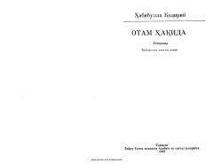

OHHabibulla Qodiriyning otasi Abdulla Qodiriy haqidagi samimiy xotiralari.
Bu kitob Habibulla Qodiriyning o'z otasi — o'zbek adabiyotining asoschisi Abdulla Qodiriy haqidagi xotiralari to'plamidir. Muallif otasining hayoti, ijodi va o'sha davr adabiy muhiti haqida shaxsiy kuzatishlar asosida so'z yuritadi. Asar 1983-yilda to'ldirilgan ikkinchi nashr sifatida Toshkentda chop etilgan.